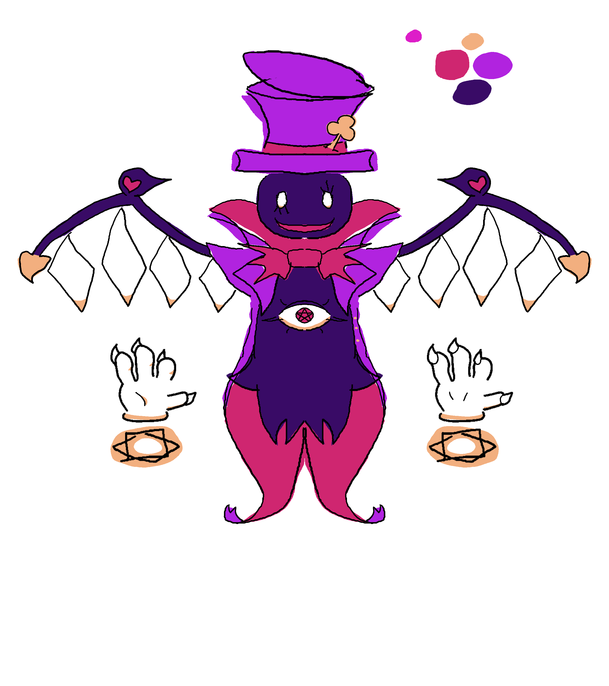
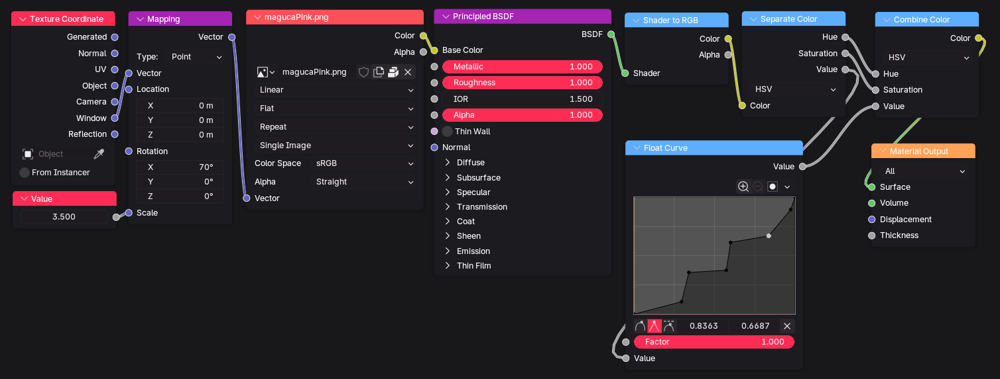
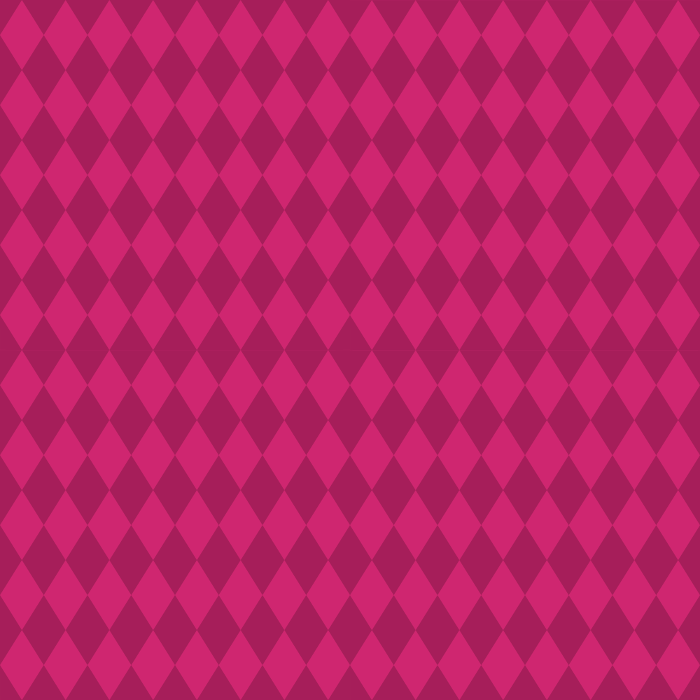
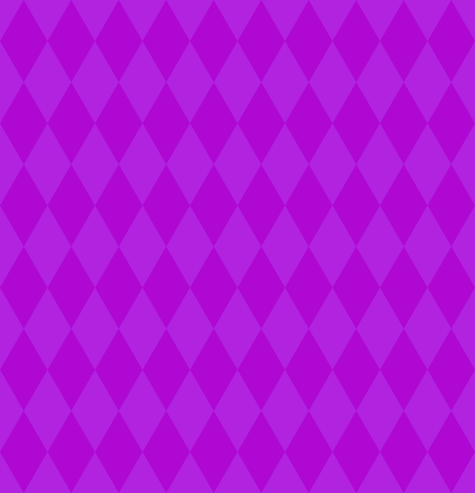
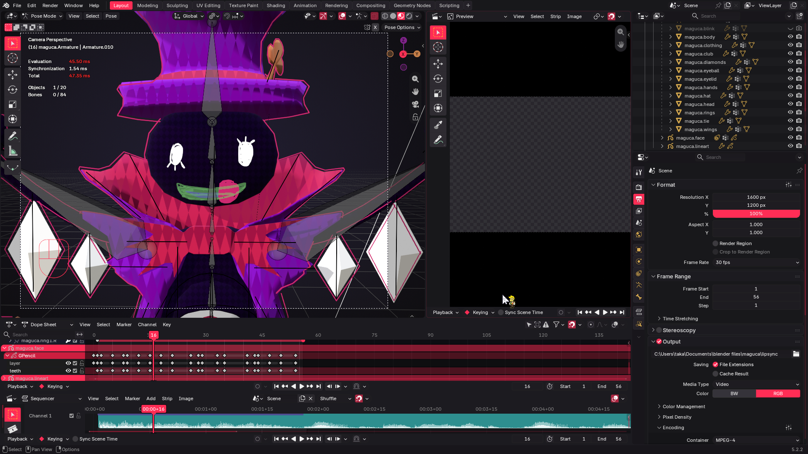

This redesign was made in April 2026, though tweaks have been made in October 2026, mostly relating to Blender's default color management settings being more suited for photorealism rather than stylised work
Redesign Drawing

I drew this specifically as modelling reference, so I didn't mind inconsistent line weight or looking messy
When redesigning Maguca, I wanted to lean more towards the rest of its mutation lines theme of trickster magician rather than being an eldritch horror and I thought keeping the bowtie from Magu, collar from Magecci and the red from both would communicate this
I also tried to incorporate all the card symbols but not sure how well its communicated (spades are wing tips, club is the hat feather)
I have no idea what magucas wings are meant to be, so I thought adding some inspiration from Marx's and Flandre Scarlet's wings could help (not too familiar with either's franchises but they seem fitting for Maguca and Magu line already has plenty of Kirby inspiration)
(Not present in my drawing but) BlueFireMochi's drawing of Maguca with the diamond pattern inspired me to make the textures I did
This was done with these shader nodes and textures



^scrollable gallery^
I thought the patterns standing still would communicate a sense of other cartoony worldly-ness that I wanted to achieve with this character
As opposed to a traditional 'color ramp' node to create the toon shading, I used a float curve in order for the textures to be affected by the colours of the lights that hit it
Eyeball Rig
This was made with 3 shape key modifiers affecting a cube cutting into a sphere create the eyelids with a boolean modifier being controlled with drivers, which are connected to bones in the rig
Grease Pencil face

Here you can see a bit of my animation workspace, involving the Dope Sheet for Armature keys and Grease Pencil frames and the Video Sequencer for audio. Usually I animate all of a characters poses or expressions first before moving onto the other but this example doesn't involve any posing
I decided to choose a Grease Pencil object to use for the facial expressions as opposed to a traditional face rig as I enjoy the look of hand drawn expressions and thought it'd be fitting of a more chaotic character
Wiggle bones
I used the Wiggle 3/Jiggle Physics Blender addon to add physics to certain parts of the character like to the top of the hat to make it more dynamic and cartoony